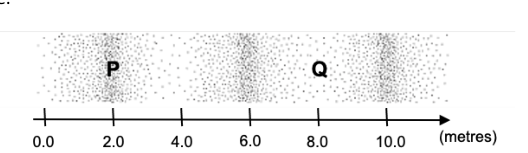
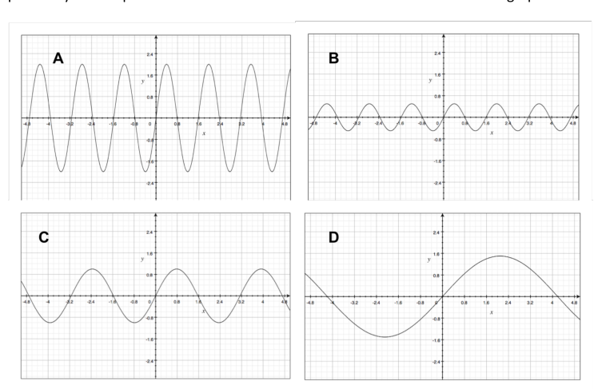
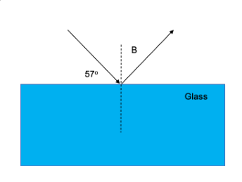
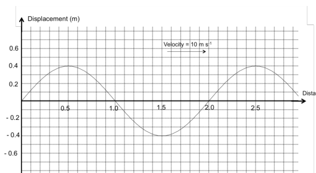
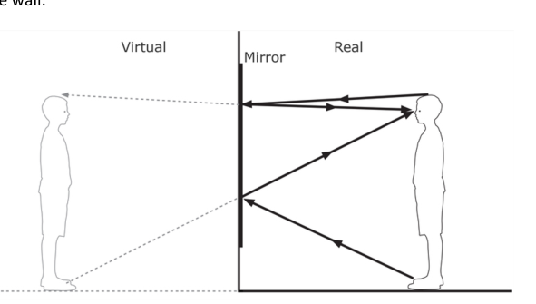
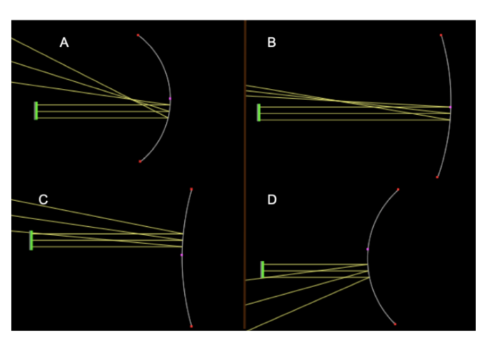

Section 1: Multiple choice (10 marks)
Questions 1 to 3 refer to the diagram below, a snapshot of a sound wave.

The correct descriptions of the zones labelled P and Q are:
Which is the best estimate for the wavelength of the source?
The compressions are about 4 m apart (at 2, 6 and 10 m).
Which best describes the type of wave shown?
In which of these does sound travel slowest?
Questions 5 and 6 refer to the diagrams below, which show the outputs of a musical signal captured by a microphone. The scales on the axes are the same for all graphs.

Which output has the lowest pitch?
Lowest pitch means lowest frequency: the fewest waves in the same time.
Which output would give the quietest sound when played through a speaker?
Quietest means the smallest amplitude.
Which of these sound intensity levels would be suitable for listening to music on headphones?
What is the best estimate for the speed of a wave on a string if the wavelength is 0.6 m and the frequency is 250 Hz?
v = f × λ = 250 × 0.6 = 150 m/s.

The diagram above shows a ray of light reflecting off a surface. Which is the name and best estimate of angle B?
The 57° is measured from the surface, so the angle of incidence (from the normal) is 90° − 57° = 33°. B is between the reflected ray and the normal, so it is the angle of reflection, 33°.
Which of the following would be classified as opaque? (Select all that apply.)
Section 2: Short answer (15 marks)
Show (on paper) how your eye judges the distance to an object from the path of the light rays: draw rays from a near object and a far object to the eye. Describe it, then compare.
- Near object: the rays from the object reach the eye at a wide angle (they are spreading out a lot) (1 mark).
- Far object: the rays arrive at a small angle: they are almost parallel (1 mark).
Question 2 (4 marks)
The diagram is a snapshot of a wave travelling along a rope at 10 m/s.

State the amplitude of the wave.
State the wavelength of the wave.
Calculate the frequency of the wave.
f = v / λ = 10 ÷ 2.0 = 5 Hz.
An astronaut orbiting the Moon uses a laser pointer to signal a colleague orbiting the Earth. If it takes 0.2 seconds for the light to travel between them, find the distance between them in km. (Use a speed of light of 300 000 km/s.)
d = v × t = 300 000 × 0.2 = 60 000 km.
Question 4 (2 marks)
The diagram shows an observer (real) viewing an image of themselves (virtual) in a mirror on the wall.

Referring to the law of reflection, explain why the observer doesn't need the mirror to reach all the way to the floor to see an image of their toes.
- Light from the feet reflects off the mirror with the angle of reflection equal to the angle of incidence (1 mark).
- So the light from the feet that reaches the eye hits the mirror about halfway between the feet and the eye, which is above the bottom of the wall (1 mark).
With the help of a diagram (on paper), show how a concave mirror can be used to improve the performance of a flashlight (compared with a globe without a mirror).
- Without a mirror: light from the globe spreads out in all directions, so much of it is wasted (1 mark).
- With a concave mirror: the globe is placed at the focal point, so light hitting the mirror reflects forward (1 mark)
- as a parallel beam along the central axis, making the beam brighter and directed (1 mark).
Question 6 (2 marks)

Choose the correct letter for each description.
Concave mirror, short focal length:
Concave mirror, long focal length:
Convex mirror, short focal length:
Convex mirror, long focal length: